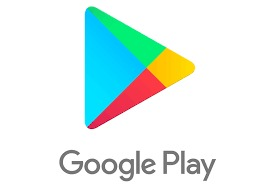

¿Que es una app?
Las apps son muy utilizadas en la actualidad, bien para simplificar un sitio web en dispositivos móviles, o para ofrecer servicios especializados para algunos sistemas como Android o iOS, pero sin embargo pocas personas conocen el significado del término.
Sus siglas provienen de la palabra inglesa Application. Define a un programa de software que se encuentra diseñada para ser utilizado en celulares, tablets y otros dispositivos móviles.
Para el inicio de la década del 2000 el termino se empezó a referir a todas las aplicaciones móviles o de PC. Pero sin embargo con el transcurso del tiempo se fueron creando y abriendo nuevas tiendas en línea de venta y descarga de aplicaciones móviles. Lo cual impulso la evolución del termino hasta llegar a referirse directamente a pequeños programas que pueden ser descargados que pueden ser descargados e instalados en los Smartphone.
En la actualidad existen una gran variedad de APPs y tiendas en donde las puedes descargar algunos de los ejemplos más importante.
◉ Google Play.
◉ Apple Store.
◉ iTunes.
◉ Amazon AppStore.

¿Para qué sierve una APP?
Suelen tener como objetivo facilitar parte de las tareas que el usuario realiza a diario. Por eso cada una de ellas tiene su propia función específica, Algunas de ellas son leer noticias, otras se desempeñan como redes sociales o como medios de comunicación. E incluso existen cientos de aplicaciones para jugar, para hacer ejercicio o inclusive para cursos académicos.
A diario los desarrolladores se esfuerzan por realizar sistemas de mejor calidad y con un rendimiento superior.
Características de una app
◉Suelen estar diseñadas para distintos sistemas operativos, siendo funcionales en Android y iOS.
◉Se pueden descargar e instalar rápidamente en cualquier dispositivo, solo hace falta una buena conexión a Internet.
◉Son más dinámicas que los sitios web, sus interfaces funcionan con rapidez, son interactivas y fáciles de utilizar.
◉No ocupan muchos megabytes en el sistema, aparte, realizan funciones muy específicas, no como el software de ordenador que tienen mil y un opciones.
◉Existe una gran variedad de estos sistemas, para escuchar música, jugar, comprar, trabajar, tomar fotos, aprender y más.
Tipos de APP
las APPs suelen diferenciarse entre sí según su naturaleza, finalidad y uso, aunque tienen muchas cosas en común como el desarrollo de la interfaz cuentan con características básicas.
◉Nativas: son desarrolladas en un lenguaje de programación especifico, por lo que son específicas para un tipo de sistema un ejemplo de este hecho es que las aplicaciones realizadas en java solo estarán disponibles para Android, un ejemplo de estas es WhatsApp.
◉Web: No suelen funcionar sin conexión a internet, pero pueden ser desarrollados en cualquier lenguaje de programación, como java o HTML. Estos están disponibles para cualquier tipo de sistema se adaptan a cualquier dispositivo.
◉Hibridas: Esta es una combinación de las características de las nativas e híbridos, funcionan en cualquier sistema y dispositivo, al mismo tiempo, pueden ejecutarse sin conexión a internet. Un ejemplo básico son las aplicaciones de redes sociales como Instagram.
¿Cómo crear una APP
En la actualidad el mercado de las aplicaciones móviles se está expandiendo de forma rápida a medida que nuestra sociedad depende cada vez más en los teléfonos celulares y la tecnología.
Según Estatista (portal de estadísticas en línea alemán) en 2017, se descargaron aproximadamente 1789 millones de aplicaciones, y este número alcanzará los 258 mil millones para finales del 2022. Esto evidencia que existe una gran demanda de aplicaciones, lo cual hace que el mercado móvil se vuelva altamente competitivo.
Pero a pesar de lo que pueda parecer no es fácil crear una aplicación. Para esto se necesita de tiempo, experiencia y generalmente suele ser costoso. A menudo suele cometerse el error de lanzarse sin antes tomarse el tiempo de analizar sus ideas y comprender los pasos necesarios para crear una aplicación exitosa.
Ya sea que estés creando una aplicación para complementar un sitio web, llegar a una nueva audiencia para un negocio o simplemente se tiene una gran idea para una nueva aplicación aquí se mostrarán los pasos para crear una app.
1.- Define los objetivos de tu aplicación
La idea de una app puede nacer de cualquier cosa y en cualquier momento, como por ejemplo la necesidades de recibir ayuda en alguna tarea cotidiana o para entretener gente.
También pueden ser la siguiente etapa o la evolución de una idea o concepto ya existente un ejemplo de esto es el convertir una página web a una app móvil.
Al principio es importan ante entender lo que puede aportar tu idea, en términos de resultados.
Una buena manera de empezar a pensar en los objetivos de tu producto ya que se trata de la dirección que se va a seguir para el diseño y el desarrollo de sus funcionalidades algunos ejemplos de preguntas útiles para definir los objetivos de una app:
¿Cuáles son los beneficios de tu proyecto?
¿Cómo va a ayudar/entretener el usuario final?
¿Ves el producto evolucionar en el futuro?
¿Cómo quieres que los usuarios interaccionen con él?
Estas preguntas son útiles para entender el producto final y su desarrollo
2.- Busca el mercado objetivo de tu app
Después de tener bien definida tu idea es importante definir el público objetivo al cual va a ir dirigida la app para lo cual es necesario investigar información sobre el público al cual va dirigida tu app algunas preguntas útiles para esto es.
¿Cuál es la edad media de tus usuarios?
¿Dónde están ubicados tus usuarios?
¿Cuál es la situación de conectividad de tus usuarios (siempre conectados/a veces/nunca tienen acceso a una conexión internet estable)?
¿Qué tipo de dispositivos utilizan tus usuarios?
¿Cuál es la situación financiara media de tus usuarios objetivos?
¿Pasan más tiempo tus usuarios en la web o en apps móviles?
¿Están dispuestos a descargar tu app?
¿Dónde buscan información?
3.- Define el concepto de tu app
Una vez ya esté terminado los primeros análisis es posible sacar conclusiones pertinentes, ya es posible entender cuál es tu audiencia y se han establecido los objetivos
Es posible estructurar el concepto de tu app, incluyendo las funcionalidades clave y los beneficios planeados
Una vez se tienen todas las ideas y conceptos bien definidos, es mucho más fácil determinar la importancia de cada funcionalidad, así como la funcionalidad de tu app.
4.- Elige la tecnología de tu app
Es necesario entender las distintas tecnologías disponibles para desarrollar y para las cuales puede estar dirigida tu app ya sea que tu app este dirigida para ser nativa ósea que se ejecute por completo en dispositivo en el cual se encuentre la app o hibrida la cual aparte de funcionar en el dispositivo necesita de conexión a internet para un correcto funcionamiento.
Así como es necesario definir el sistema operativo hacia el cual está destinado y el lenguaje de programación. Esto nos permitirá definir aún más el rumbo que tomará tu app.
5.- Explora las diferentes opciones para crear una app
Para crear una app es posible utilizar una de 3 opciones
Desarrolla tu app tú mismo
Esta opción requiere tiempo y la habilidad necesario para realizar la aplicación aunque la ventaja de este es que te permitirá personalizar tanto como quieras.
Contrata una agencia o desarrollador independiente.
Es posible contratar empresas o programadores para realizar las aplicaciones por lo cual esta es la forma más fácil debido a que solo debes pagar a alguien más para hacerlo, pero por ende esta es la forma más costosa
Utiliza un creador de apps.
Un creador de apps es un servicio que construye apps y permite a los usuarios con habilidades bajas o nulas en codificación crear fácilmente una app.
Esto nos da una opción más fácil que el crear una aplicación desde cero y más barata que contratar una empresa, pero sin embargo estos creadores de apps nos limitan bastante en cuanto a la personalización
6.- Prueba tu app
Después de reunir todas las piezas y realizar todo el trabajo difícil la aplicación estará casi lista por completo, pero antes de competir una app será necesario hacer pruebas previas a finalizar el proceso.
Tenemos que realizar una serie de pruebas para revisar el correcto funcionamiento de la aplicación y mediante estas pruebas revisar y encontrar los errores y fallas que pudieran haber quedado en nuestra app y al identificarla estos problemas poder arreglarlas así mejorando.
7.- Publica tu aplicación
Después de finalizar la aplicación se debe llevar está a una tienda de apps o el método de distribución al cual se vaya a destinar como por ejemplo play store o IOS.
8.- Continua las mejoras y actualizaciones de tu app
Aun después de completar y distribuir la aplicación es necesario seguir atento a los comentarios y posibles quejas o sugerencias de los usuarios de la aplicación y mediante estos poder conocer cómo mejorar aún más nuestra aplicación esto es lo principal para saber qué es y cómo hacer una página